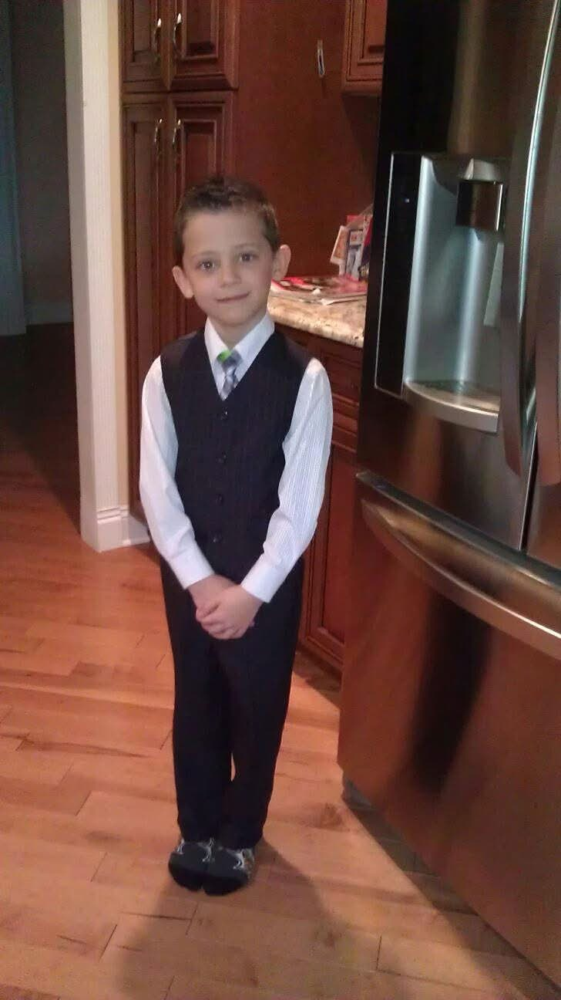

Character.AI
Summer 2026Software Engineering Intern, Trust & Safety (incoming)
Go backend services and React tooling for the Trust & Safety team.
I'm a junior studying computer science at Pitt. I like building things that keep people safe online, and being very far from a screen the rest of the time.
now — incoming Trust & Safety intern @ Character.AI · summer 2026

CS junior at the University of Pittsburgh with a business minor. I TA Data Structures & Algorithms and coordinate events for PittCSC, which mostly means convincing companies that students are worth the pizza budget.
I keep ending up at the intersection of software and safety — security automation at the NFL last year, Trust & Safety tooling at Character.AI this summer. Go on the backend, React when someone needs to click on things.
Off the clock —
Software Engineering Intern, Trust & Safety (incoming)
Go backend services and React tooling for the Trust & Safety team.
Security Automation Intern
Built automation around the league's security infrastructure — firewall rule analysis and tooling that turned manual review work into pipelines.
Events Coordinator
Plan and run events for Pitt's computer science club — tech talks, socials, and company visits.
Teaching Assistant, Data Structures & Algorithms
Recitations, office hours, and explaining why the exam wants O(log n).
A one-line description of a personal project goes here — what it does and what it's built with.
Second project placeholder — keep it to a sentence, link the repo.
// placeholders — swap in real projects